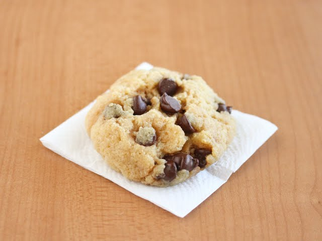

5 MINUTE MICROWAVE COOKIES

The quickest and most delicious cookie recipe
Not everyone has time to prepare and make cookies, this recipe lets you make what you're craving within minutes
Ingredients
- 1 tbsp unsalted butter
- 4 tbsp all-purpose flour
- 1 tbsp granulated sugar
- 1 tbsp brown sugar
- 1 tbsp whisked egg
- 1/4 tsp vanilla extract
- 1 tbsp semisweet chocolate chips
Steps:
-
Place butter in an oversized microwave-safe mug. Melt in microwave for about 40 seconds (for cold butter) or until completely melted.
-
Add remaining ingredients except chocolate chips. Mix with a small whisk until dough comes together. Stir in chocolate chips.
-
Press dough evenly across the bottom of the mug. Or, if you want to make a traditional cookie, scoop the batter out of the mug and form it into a cookie shape (round thick disc) on a microwave-safe plate lined with parchment paper.
-
Cook in microwave for about 50 seconds. Let cookie cool a few minutes to firm up. Then eat immediately. Please note, cookie must be eaten immediately or it will dry out and harden after a while.